代号“老枪”的特工与另外五个特工组成了一个特别行动小组。老枪被告知，他们相互之间只能单线联系，出发之前“老枪”得到了他与其他五个人联系的接头暗号，并要求牢记在心。
那么，这个六人特工小组一共有多少个接头暗号呢？
我们可以将老枪参与的六人特工小组抽象成以下图模型，点表示老枪和他的小伙伴们，线表示互相之间的接头暗号，数一数，一共15条，这就是这六人特工小组互相使用的接头暗号的总数。
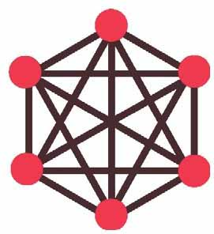
在上面的图中，每对不同顶点之间恰有一条边，这样的图叫完全图，下面的四个图分别叫三阶、四阶、五阶、六阶无向完全图，也称为K3，K4，K5，K6：
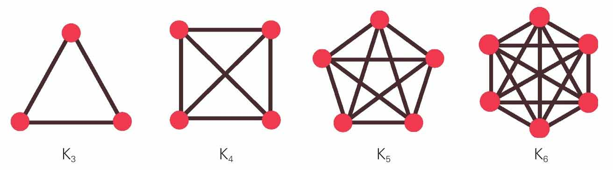
无向完全图K3，K4，K5，K6
很多时候，我们可以把现实生活中的离散对象抽象成点，离散对象之间的联系用线表示，有时候这些点用线连接起来后，形状会比较有趣。
下面的图中，顶点和边的形状总可以围成一个圈，叫圈图。
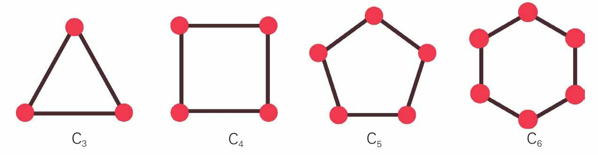
圈图C3，C4，C5，C6
在“圈”中心添加一个顶点，这个新顶点再与原来已有的顶点逐个连接起来，就可得到轮图，新添加的顶点就好像轮子的轴心。
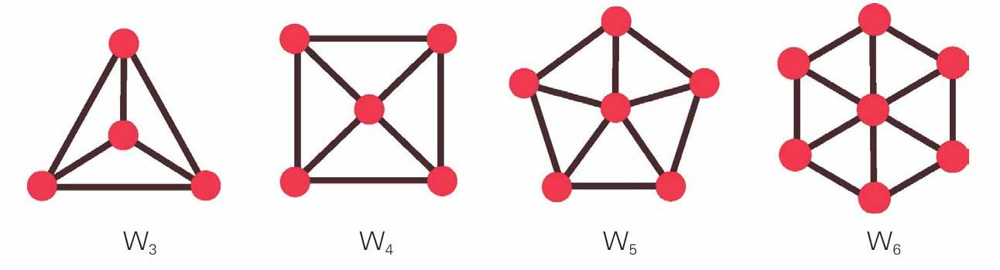
轮图W3，W4，W5，W6
轮图去掉“轮子”上的边，可以得到星形图。
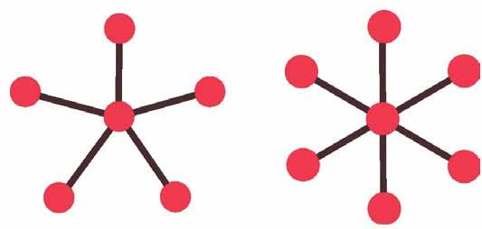
W5，W6对应的星形图
星形图、圈图和轮图的形状可以成为计算机局域网的三种拓扑结构，分别对应的是星形、环形、混合型拓扑结构的计算机局域网。
立方体图，顾名思义有点像立方体，它的顶点可以用位串来表示。
立方体图Q1有2个顶点，用0、1表示。立方体图Q2有4个顶点，用00、01、10、11表示。
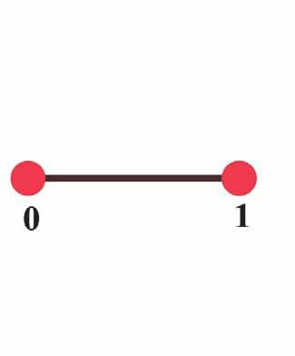
立方体图Q1
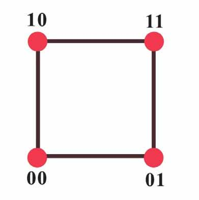
立方体图Q2
不过Q1和Q2看起来不太像立方体，但Q3的形状是一个标准的六面体。Q3有8个顶点，每个顶点可以用3位的位串000、001、010、011、100、101、110、111表示。
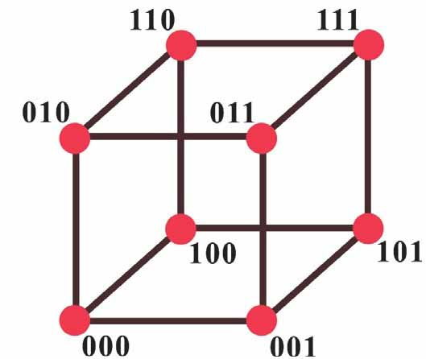
立方体图Q3
从标号为000的点出发，依次经过001-011-010-110-111-101-100-000，这样一条路径正好可以构成三位格雷码，格雷码是以弗兰克·格雷（Frank Gray）名字命名的一种编码。
格雷码的特征是任意相邻的编码中，只有一位二进制位不同（相邻的两个编码变化最小）。20世纪40年代，格雷在贝尔实验室发明了这种编码，目的是为了减少数字信号传递过程中的错误。
我们可以用如下方法由Q3构造Q4：先画出两个Q3，一个Q3称为Q3，old，另一个Q3称为Q3，new。
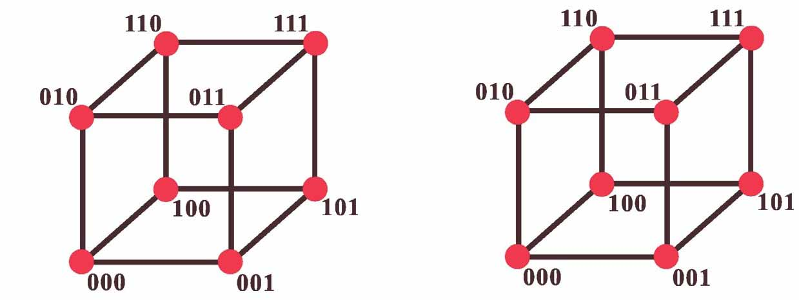
在Q3，old每个顶点标记前加0，在Q3，new每个顶点标记前加1。
连接Q3，old和Q3，new相对应的每个顶点就可得到Q4。
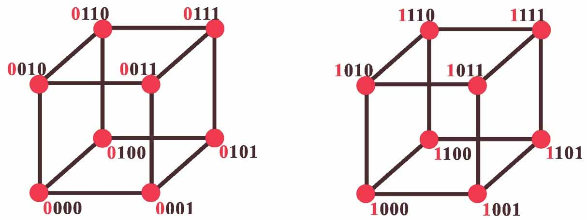
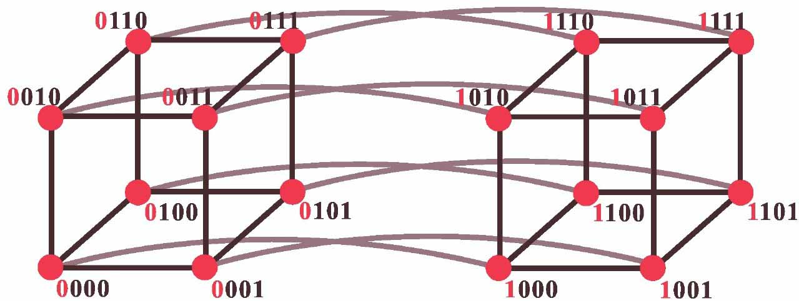
连接Q3，old和Q3，new相对应的每个顶点得到Q4
同样的，从0000出发，依次经过0001-0011-0010-0110-0111-0101-0100-1100-1101-1111-1110-1010-1011-1001-1000，这样一条路径正好构成四位格雷码。
下面的图有15条边，顶点数是10，每个顶点的度数是3，这样的图叫彼得森图。
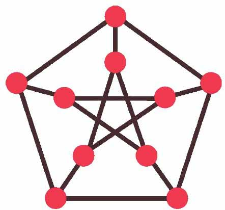
与之同构的图（什么是同构，下面马上要讲到）多种多样，形状各异，共有100多种。小文你可以一一确认一下，下面的图是不是都是15条边，10个顶点，每个顶点的度数都是3。
它们都是彼得森图。
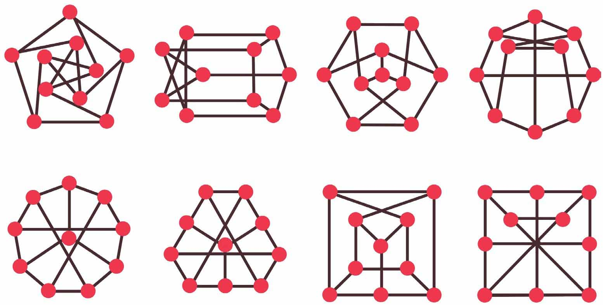
各种形状的彼得森图
尤利西斯·彼得森（Julius Petersen）是一个出身贫寒的数学家，出生在美人鱼的故乡——丹麦，他研究的内容很广泛，据说他不愿意读其他数学家的作品，所以他经常发现一些别人已经发现过的“结果”，这让他很头疼。但如果他知道了其他数学家不读他的作品，他会很生气。彼得森去世时，一家报纸称他为科学界的“安徒生”。